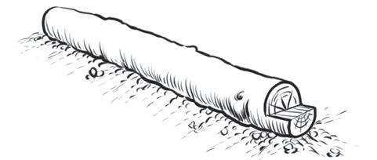

Images appearing in horizontal direction
The use of lines is very important when drawing horizontal images, as they help to show direction, depth, and composition in the image. For example, the lines in Figure 15 in the trees show the horizontal direction. Observe or Look at the position of the log, also examine the lines inside the log, and in the cut section, you will see the horizontal direction.

Images appearing in different directions
In drawing, lines provide guidance on how to create an image that reflects different orientations. Each type of direction relies on the use of a specific kind of line. Figure 16 is a stump, where the log has been cut. Examine the direction of the lines in the image, you will notice that the lines in this image show different directions.